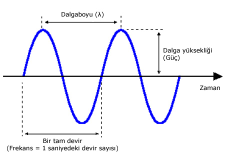

Dalga Hareketi

Dalga hareketi, esnek bir ortamda meydana gelen titreşimlerin veya enerji bozulmalarının, madde taşınımı olmaksızın düzenli bir şekilde bir yerden başka bir yere aktarılmasıdır. Temelde enerji taşıyan bu hareket; su, ses ve ışık gibi örneklerle madde veya uzayda yayılır. Dalga hareketi, ortam parçacıklarının denge konumundan sapması ve tekrar dengeye dönme çabasıyla oluşur.
Sinüs dalgaları
u(x,t) = A sin(kx - ωt + π)
Açısal frekans
ω = 2πf = 2π/T
f = 1/T